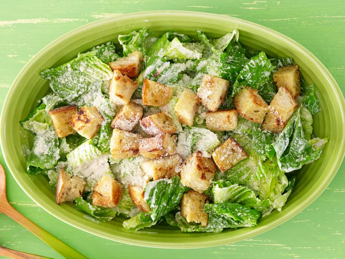

Home
Caesar Salad

What Is a Caesar Salad?
A popular green salad featuring crisp romaine lettuce, crunchy croutons,
and shaved Parmesan cheese, all tossed in a rich, tangy dressing.
Ingredients for Caesar Salad
- 6 cloves garlic, peeled, divided
- 3/4 cup mayonnaise
- 6 tablespoons grated Parmesan cheese, divided
- 5 anchovy fillets, minced
- 1 tablespoon lemon juice, or more to taste
- 1 teaspoon Worcestershire sauce
- 1 teaspoon Dijon mustard
- salt and freshly ground black pepper to taste
- 1/4 cup olive oil
- 4 cups day-old bread, cubed
- 1 head romaine lettuce, torn into bite-sized pieces
How to Make Caesar Salad
- Gather all ingredients.
- Mince 3 cloves of garlic and place in a small bowl.
Add mayonnaise, 2 tablespoons grated Parmesan cheese,
anchovies, lemon juice, Worcestershire sauce, and mustard;
mix well to combine. Season to taste with salt and black pepper.
Refrigerate until ready to use.
- Heat oil in a large skillet over medium heat.
Slice remaining 3 cloves of garlic into quarters and add to hot oil.
Cook and stir until brown, then remove garlic from pan.
Cook bread cubes in hot flavored oil, turning frequently, until lightly browned;
transfer onto a plate and season with salt and pepper.
- Place lettuce in a large bowl.
Add dressing, remaining Parmesan cheese, and seasoned bread cubes; toss well to coat.
- Serve and enjoy!